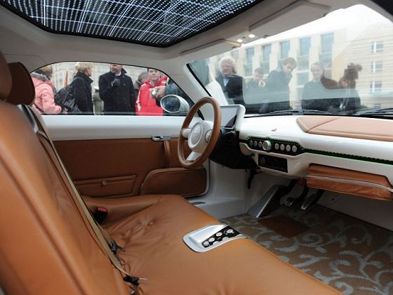

|
Auto Bild: Geleceðin Porsche'si olabilir
AVRUPA'nýn en önemli otomobil dergisi Alman Auto Bild, nisan sayýsýnda Murat Günak'ýn Mindset'i ile Porsche 911'i karþýlaþtýrdý. "Geleceðin spor otomobilleri böyle mi olacak?" baþlýklý karþýlaþtýrma yazýsýnda Auto Bild'de Mindset ile ilgili þu görüþlere yer verildi: "Mindset geleceðin Porsche'si olabilir. Klasik yerine elektrikli, güçlü yerine çok hafif. Bu araç gerçekten çok çekici özellikler sunuyor. Özellikle de küresel krizin bu kadar güçlü hissedildiði, çevre kaygýlarýnýn gittikçe þiddetlendiði günümüzde.
Almanya'da yapýlan ölçümlere göre Mindset'in 100 km ilerlemek için ihtiyaç duyduðu elektriðin bedeliyle 1,2 litre benzin alýnabiliyor. Ýlk cümlede "geleceðin Porsche'si" terimini kullanmýþtýk ve bu hiç de abartýlý bir saptama deðil. Çünkü Mindset ile 911 arasýndaki ortak noktalar sanýldýðýndan çok fazla: Yüksek verim, güvenilirlik, kalite ve statü.
Mindset'in üreticileri Porsche'yi baþka bir nedenle de örnek alýyor: 1948 yýlýnda Ferdinand Porsche, 356'yý piyasaya çýkardýðýnda tam bir devrim yaratmýþtý. Çünkü halkýn Kaplumbaða'sý bir spor otomobile dönüþmüþtü. Ayný þeyi Mindset de hedefliyor. 2+2 oturma düzenli Mindset'in 22 inçlik jantlarý ve ince tabanlý lastikleri, yolda bir böcek gibi ilerliyormuþ hissi veriyor.
Geleceðin sporcusu olarak sunulsa da bu otomobilin teknik verileri pek de etkileyici deðil aslýnda. Örneðin menzili 100 km, maksimum hýzý ise 140 km/s. Ancak bu çevreci otomobilin çekici özellikleri çok farklý yönlerde gizli. Örneðin yolda neredeyse süzülerek ilerliyor, deri döþemelerde çok rahat oturuluyor, önemli bilgiler laptop ekranýna yansýtýlan analog görünümlü göstergelerden izleniyor, yüksek oturma pozisyonu görüþü iyileþtiriyor."
Otoda büyümenin yolu niþ modelden geçiyor
Türkiye'nin otomotivde büyümesinin yolunun niþ modellerle olacaðýný da söyleyen Doðuþ Otomotiv CEO'su Ali Bilaloðlu, "Bu noktadan baktýðýmýzda elektrikli bir araç olan Mindset, Türkiye için niþ bir proje. Bu aracý sadece üretilip satýlacak bir araç olarak deðil Türkiye'ye teknoloji alanýnda saðlayacaðý katkýlara da bakmamýz lazým. Belki bu araçta kullanýlan teknoloji yarýn baþka sektörlerde de kullanýlacak. Yani bu araç teknoloji olarak da Türkiye büyük katma deðer saðlayabilir" dedi. Bilaloðlu, Alman Volkswagen Grubu'nun elektrikli araçlarý otomotiv sektöründe bir geçiþ teknolojisi olarak gördüðünü de belirterek, "10-15 yýl elektrikli araçlar piyasaya yön verecektir. Ama unutulmamasý gereken elektrikli araç kullanýrken çevreyi korusa da, pil üretimi çok da çevreci deðil. Bu yüzden elektrikli araçlar geçiþ olup, yerini daha çevreci enerjilere býrakacak" yorumunu yaptý.

Büyük resim için týklayýnýz
Büyük resim için týklayýnýz
Büyük resim için týklayýnýz
|